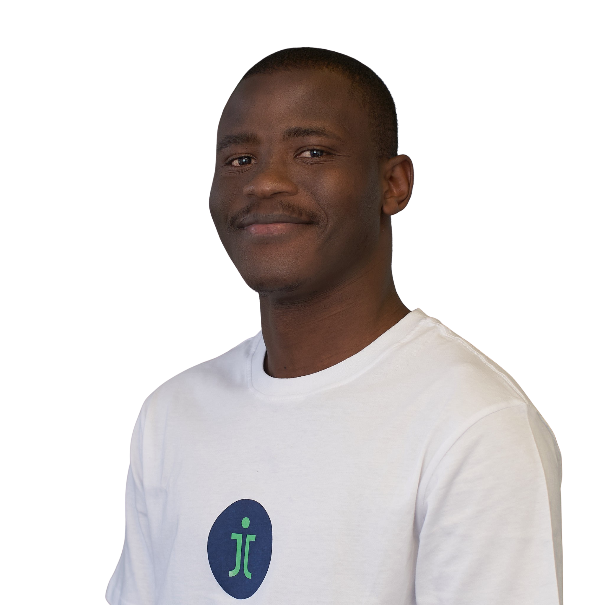

<div class="max-w-6xl mt-10 p-4 mx-auto">
  <div
    class="flex flex-col-reverse md:flex-row mx-auto justify-center md:mt-10"
  >
    <div class="p-4 lg:w-[60%] lg:pr-[4rem]">
      <div
        class="p-6 mt-5 shadow-lg cursor-pointer group hover:bg-gray-700 hover:text-white duration-300 rounded-md mb-6"
      >
        <h2 class="text-2xl text-black group-hover:text-white font-semibold">
          Education
        </h2>
        <p class="text-md text-black group-hover:text-white mt-3 text-lg">
          BSc. Mathematical Science,
          <a
            href="https://www.ul.ac.za/"
            target="_blank"
            class="hover:underline"
            >University of Limpopo</a
          >
          <span
            class="text-gray-400 group-hover:font-semibold text-xs block mt-3"
          >
            2015 - 2018</span
          >
        </p>
      </div>
      <h2 class="text-2xl my-6 font-semibold">About me</h2>
      <p class="text-md mt-4">
        I am a passionate and dedicated software developer with 4 years of
        professional experience in creating and maintaining web applications. My
        expertise lies in full-stack development, where I have honed my skills
        in both front-end and back-end technologies. I have a strong foundation
        in JavaScript, GraphQL, TypeScript, and frameworks such as Angular,
        Nodejs and NestJS, enabling me to build robust and scalable
        applications.
      </p>
      <div class="mt-4">
        Beyond technical skills, I am committed to continuous learning and
        knowledge sharing. I actively contribute to team discussions, mentor
        junior developers, and stay updated with the latest industry trends. My
        goal is to not only write clean and maintainable code but also to drive
        innovation and efficiency within the development team.
      </div>
      <div class="mt-4">
        In my free time, I enjoy exploring new technologies, studying topics
        such as astronomy, blockchain, and renewable energy. I am also an
        aspiring entrepreneur, seeking to make a positive impact through
        technology and innovation.
      </div>
    </div>
    <div
      class="flex flex-col-reverse justify-center lg:flex-row p-10 lg:w-[40%] mx-auto max-w-96 lg:max-w-max md:mx-0 lg:bg-white lg:rounded-lg border-lg:shadow-lg lg:relative"
    >
      <div class="flex flex-col">
        <div class="p-4 bg-pink-200 rounded-full overflow-hidden">
          
        </div>
        <div class="mt-[3rem] lg:hidden">
          <div class="flex justify-between items-center">
            
            
            
            
            
            
            
          </div>
        </div>
      </div>
      <div class="hidden lg:flex languages">
        
        

        

        

        

        

        
      </div>
    </div>
  </div>
</div>
